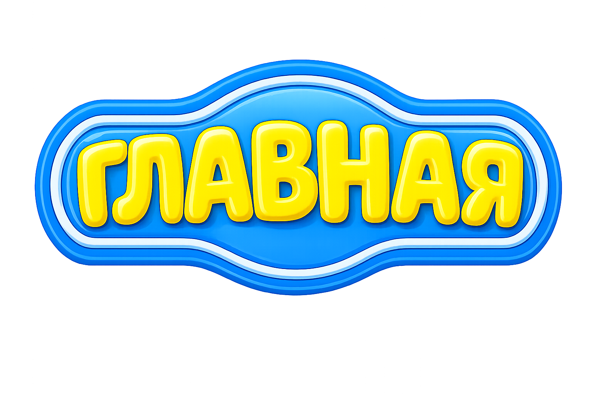
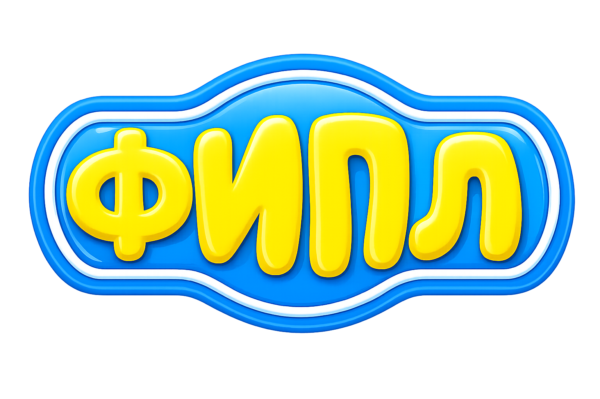
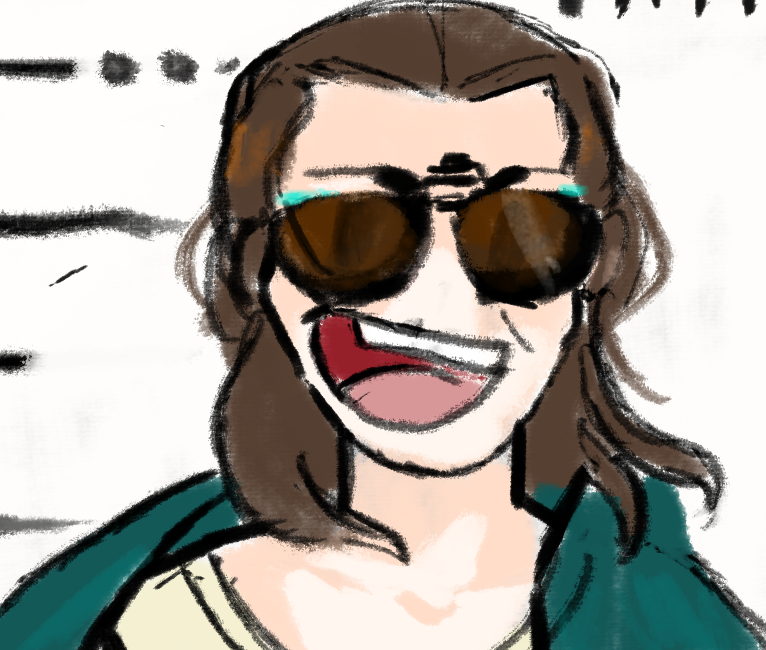
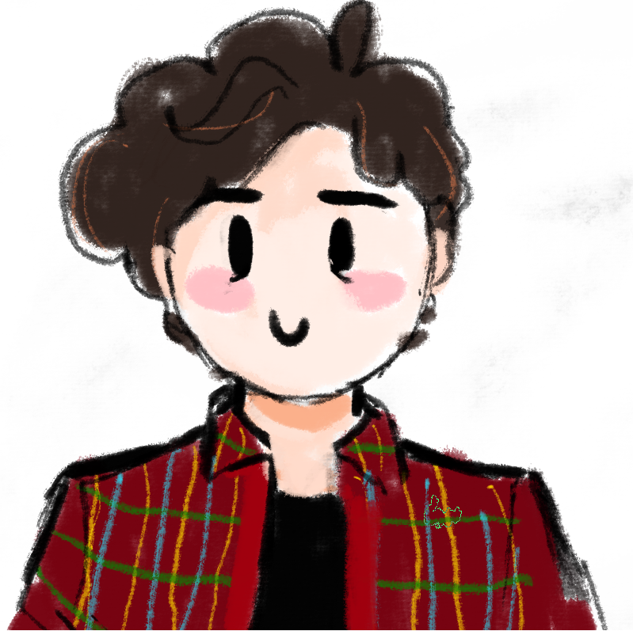
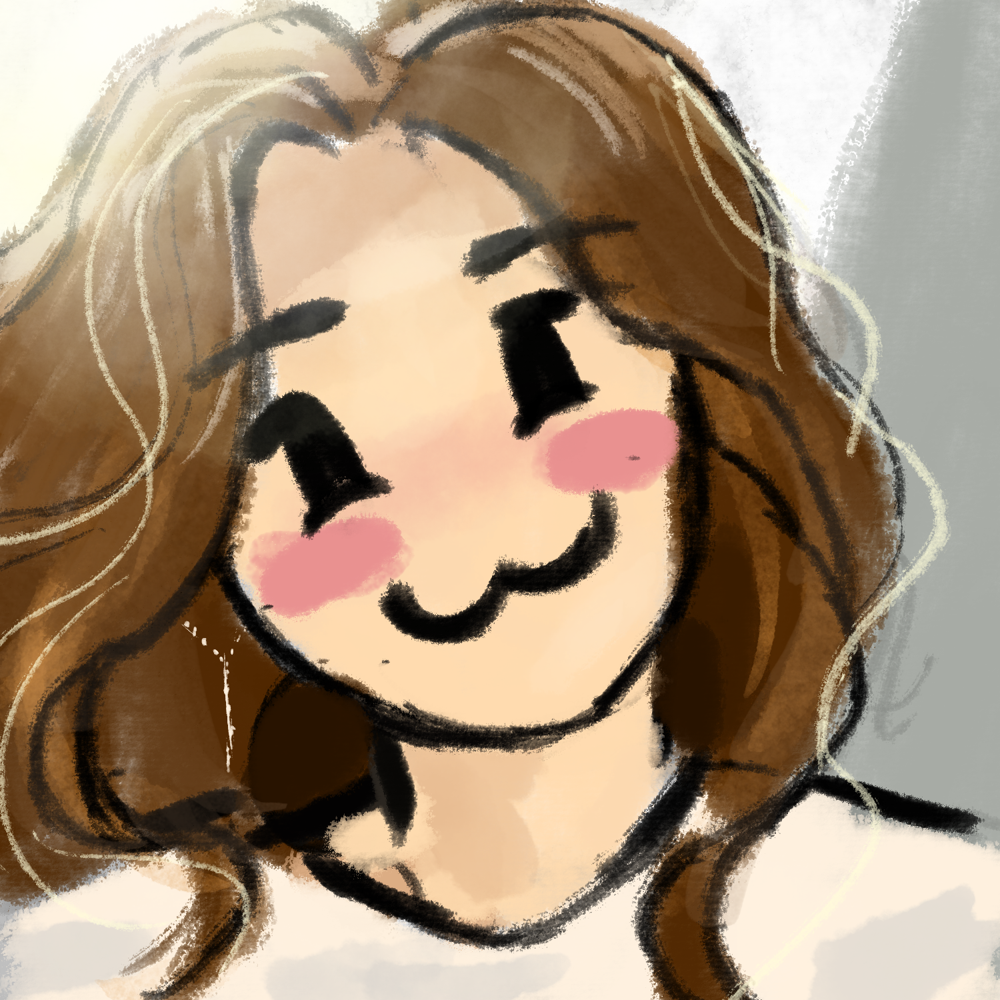
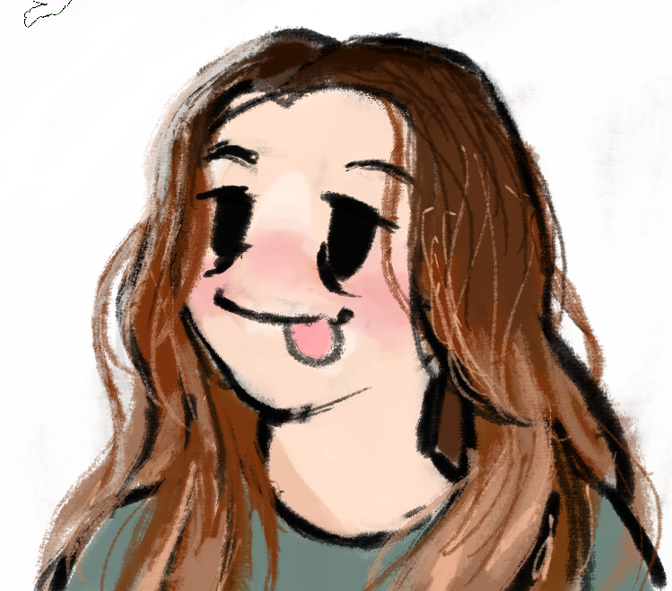

Мы уже Смешарики!

| Главная | Результаты | Исследование |

Мы уже Смешарики!
Смешарики прочно вписали себя в историю, за 22 года завоевав сердца миллионов детей по всему миру. Сейчас название мультфильма стало нарицательным и не требует объяснений. Круглых героев теперь знают все: и взрослые, и дети.
Мультик полюбился и ученым в силу своей насыщенности различными особенностями: режиссура, озвучка, саунд дизайн, звучащая речь и многое другое. Один из крупнейших гуманитарных университетов в рамках выполнения олимпиады по обществознанию предлагает школьникам проанализировать серии Смешариков (и это не шутка). Вот и мы хотим предложить вам посмотреть на кругляшей глазами лингвистов.
В нашем исследовании вы узнаете, у кого из героев мультфильма самая крепкая дружба, у кого есть свои коронные фразы, и что местоимения могут сказать о личности Смешарика. Рады представить вам проект "Речь персонажей мультсериала “Смешарики”. Отличительные черты."

А как мне стать Смешариком?
Присоединяйтесь к нашей команде! Студенты направления "Фундаментальная и прикладная лингвистика" научно-исследовательского института Высшая Школа Экономики любят нестандартные исследования (и мультсериал "Смешарики"). На этом направлении мы узнаете, почему лингвистов не коробит от слова "звОнит", как разговаривали бы Смешарики тысячу лет назад, а также сможете сами поучаствовать в самых необычных исследованиях!
Над этим проектом работали:
|
 |
Саида Шарипова 24ФПЛ2 Транскрибатор Аналитик Разработчик Python |
|
 |
Даниил Давтян 24ФПЛ2 Разработчик Python |
|
 |
Анна Марютина 24ФПЛ2 Технический писатель — документация Python-кода Разработчик Python |
|
 |
Стешова Анастасия 24ФПЛ2 Front-end разработчик Технический писатель — Front-end документация Аналитик |